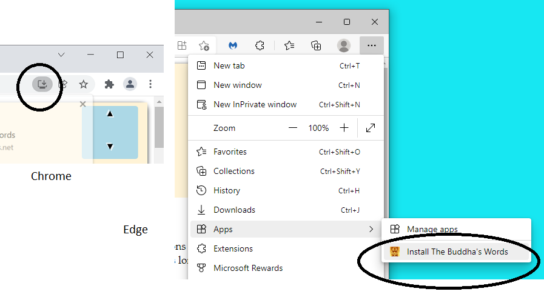

Help
The Buddha's Words works well on a tablet or PC but is a bit difficult to read on smaller smart phone-sized screens. It has been tested on a range of browsers but has been developed and maintained on Google Chrome. The Buddha's Words relies on javascript to load pages, toggle Pali on and off and to do the Pali lookup etc.
The site works online as a normal web site and, if it is installed as a Progressive Web App (PWA) (see below), it is available offline with full functionality. The Buddha's Words PWA makes it simple to install, ensures the content is available offline and automatically updates the content when you are connected to the internet. The technology which makes installation and updating easy is only found in recent versions of browsers such as Chrome, Microsoft Edge, Safari and Firefox for Android (but not the desktop version). If you'd like to access the site content while offline, it needs to be installed as a PWA from one of the supported browsers.
1. To install as a Progressive Web App on Windows and Android Devices.
Open https://thebuddhaswords.net in either Chrome or Microsoft Edge (other browsers we've tested don't have the support yet for PWA's). If you haven't already installed it, an installation icon should be showing in the top right hand corner of the Chrome browser.

Click on the installation icon to install the PWA to your device.
In Microsoft Edge, click the three dots at the top right hand corner of the browser and choose Apps | Install the Buddha's Words
Allow about ten minutes for it to fully install.
2. Installing onto a Mac OSX Device.
Install the PWA from either Chrome or Microsoft Edge.
3. Installing onto an iPad or iPhone.
Install the PWA from Safari.
If it doesn't work ...
If ...
you've followed the instructions above and
you're using one of the recommended browsers
... and it still doesn't work, please email the Buddha's Words team detailing the problem you're having and we'll do our best to help. Please see the Contact Page for our contact details.
If it does work ...
Please let us know if you come up with anything that you found works well. Please also send us your suggestions. Thanks!